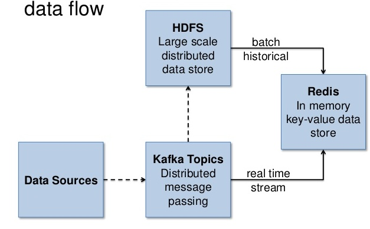
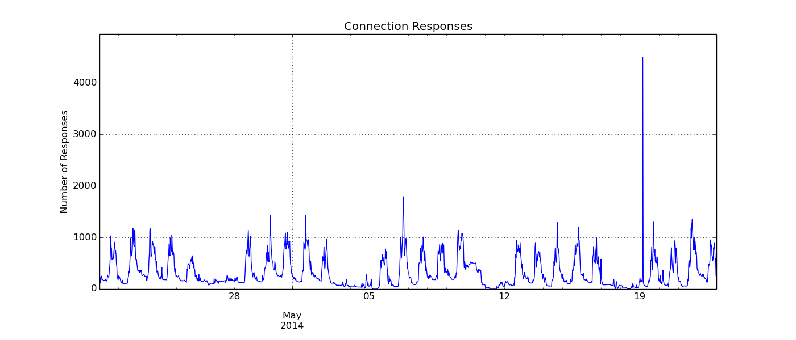

Time Series Analysis for Network Security
by Phil Roth
Last week, I had the opportunity to attend a conference that had been on my radar for a long time. I’ve been using scientific Python tools for about 10 years, so it was with great excitement that I attended SciPy 2014 in Austin. I enjoyed meeting the developers of this excellent open-source software as well as other enthusiastic users like me. I learned a great deal from talks about some Python tools I haven’t yet tried but should really already be using, like conda, bokeh, and others. I also gave a talk describing how I have been using the SciPy stack of software in my work here at Endgame. In this post, I’ll summarize and expand on the first half of my presentation.
My work at Endgame has focused on collecting and tracking metrics associated with network and device behavior. By developing a model of normal behavior on these metrics, I can find and alert users when that behavior changes. There are several examples of security threats and events that would lead to anomalies in these metrics. Finding them and alerting our users to these threats as soon as possible is critical.
The first step in finding anomalies in network and device behavior is collecting the data and organizing it into a collection of time series. Our data pipeline here at Endgame changes rapidly as we develop tools and figure out what works and what doesn’t. For the purposes of this example, the network traffic data flows in the following way:

Apache Kafka is a distributed messaging system that views messages as a log. As data comes in, Kafka takes care of receiving it and distributing it to other systems that have subscribed to it. A separate system archives this data to HDFS for later processing over historical records. Reading the data from the Kafka servers allows my database to stay as current as possible. This allows me to send alerts to users very soon after a potential problem occurs. Reading historical data from HDFS allows me to backfill metrics once I create a new one or modify an existing one. After all of this data is read and processed, I fill a Redis database with the time series of each metric I’m tracking.
The three Python tools that I use throughout this process are kairos to manage the time series database, kafka-python to read from Kafka, and pyspark to read from HDFS. I chose each project for its ease of use and ability to get up to speed quickly. They all have simple interfaces that abstract away complicated behavior and allow you to focus on your own data flow. Also, by using a Python interface to old and new data, I can share the code that processes and compares data against the metrics I’ve developed.
I gave my presentation on the third and final day of SciPy. Up until that point, I hadn’t heard Apache Spark or pyspark mentioned once. Because of this, I spent an extra minute or two evangelizing for the project. Later, the Blaze developers gave a similar endorsement. It’s good to know that I’m not alone in the scientific Python community in loving Spark. In fact, before using Spark, I had been running Pig scripts in order to collect historical data. This required a bunch of extra work to run the data through the Python processing scripts I had already developed for the real-time side of things. Using Spark definitely simplified this process.
The end result of all this work is an easily accessible store of all the metrics. With just a couple lines of code, I can extract the metric I’m interested in and convert it to a pandas Dataframe. From there, I can simply analyze it using all of the scientific computing tools available in Python. Here’s an example:
# Make a connection to our kairos database
from redis import Redis
from kairos import Timeseries
intervals = {"days" : {"step" : 60, "steps" : 2880},
"months" : {"step" : 1800, "steps" : 4032}}
rclient = Redis(“localhost”, 6379)
ktseries = Timeseries(rclient, type="histogram”, intervals=intervals)
# Read data from our kairos database
from pandas import DataFrame, to_datetime
series = ktseries.series(metric_name, “months”)
ts, fields = zip(*series.items())
df = DataFrame({"data” : fields}, index=to_datetime(ts, unit="s"))
And here’s an example time series showing the number of times an IP has responded to connection requests:

Thanks for reading. Next week I’ll talk about the different models I’ve built to make predictions and find anomalies in the time series that I’ve collected. If you’re interested in viewing the slides from my presentation, I’ve shared them here.